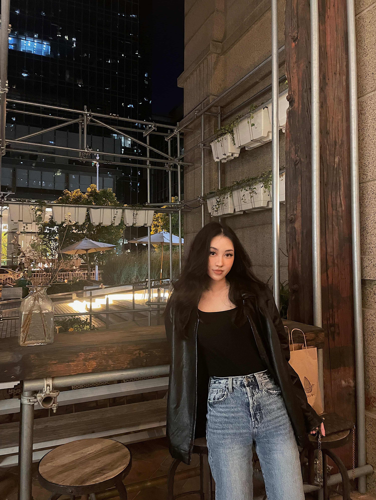

About Me
Hey! My name is Fanyi Qian, and most of my friends call me Jasmine. I was born in China but currently living in Ottawa. I graduated from Boston University three years ago, majoring in Art History. I worked for my parents for two years after graduation and am currently back in school to study Interactive Media Design as a 1st year student for a career change.

I enjoy experiencing different cultures and have traveled to nine countries and regions in the world. I am a big fan of Asian cuisine, especially Thai and Cantonese food. I took some Korean and Japanese courses as a third and fourth language my sophomore year, so I speak a little bit of Korean and Japanese other than Chinese and English. As an animal lover, I donate to shelters regularly and have helped rescuing stray cats a few times. I have two cats living with my parents in China.
My hobbies
- Listening to R&B music
- Watching true crime documentaries
- Traveling
- Journaling
I believe that it is important for us to cherish every little moment in our lives, so I think it is nice to end this self-introduction with one of my favorite quotes:
“The future depends on what you do today.” - Mahatma Gandhi